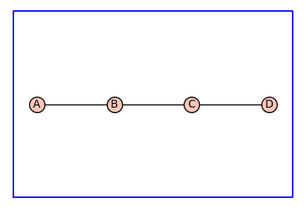
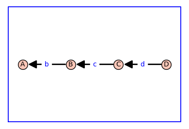
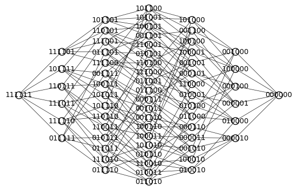
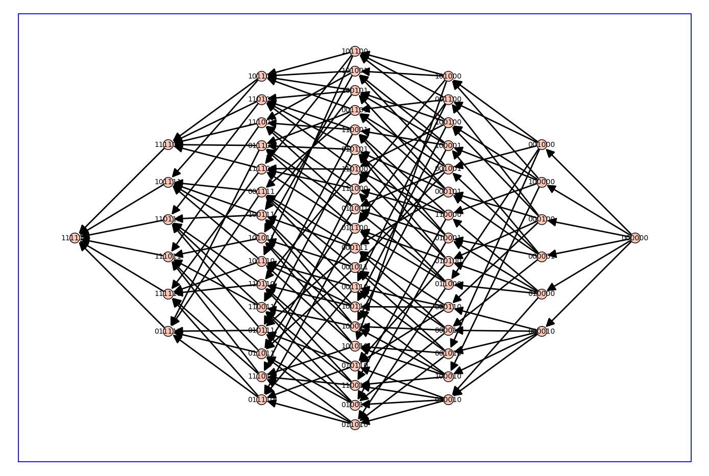
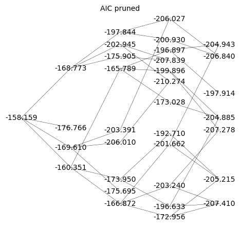
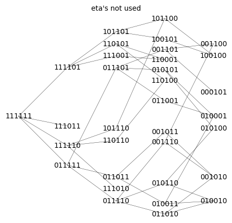

Fitting allosteric parameters#
%%capture
%run receptor_tools.ipynb
import numpy as np
import random
from matplotlib import pyplot as plt
#G = graphs.HouseGraph()
G = graphs.PathGraph(4)
(G, T, KappaEta, A) = enumerate_allosteric_parameters(G,method='alpha',show=True)


| \(1\) | \(2 \kappa_{\mathit{b}}\) | \(2 \kappa_{\mathit{b}} \kappa_{\mathit{c}}\) | \(2 \kappa_{\mathit{b}} \kappa_{\mathit{c}} \kappa_{\mathit{d}}\) |
| \(0\) | \(\kappa_{\mathit{b}}^{2} \eta_{\mathit{bb}}\) | \(2 \kappa_{\mathit{b}}^{2} \kappa_{\mathit{c}} \eta_{\mathit{bb}} \eta_{\mathit{bc}}\) | \(2 \kappa_{\mathit{b}}^{2} \kappa_{\mathit{c}} \kappa_{\mathit{d}} \eta_{\mathit{bb}} \eta_{\mathit{bc}} \eta_{\mathit{bd}}\) |
| \(0\) | \(0\) | \(\kappa_{\mathit{b}}^{2} \kappa_{\mathit{c}}^{2} \eta_{\mathit{bb}} \eta_{\mathit{bc}}^{2} \eta_{\mathit{cc}}\) | \(2 \kappa_{\mathit{b}}^{2} \kappa_{\mathit{c}}^{2} \kappa_{\mathit{d}} \eta_{\mathit{bb}} \eta_{\mathit{bc}}^{2} \eta_{\mathit{cc}} \eta_{\mathit{bd}} \eta_{\mathit{cd}}\) |
| \(0\) | \(0\) | \(0\) | \(\kappa_{\mathit{b}}^{2} \kappa_{\mathit{c}}^{2} \kappa_{\mathit{d}}^{2} \eta_{\mathit{bb}} \eta_{\mathit{bc}}^{2} \eta_{\mathit{cc}} \eta_{\mathit{bd}}^{2} \eta_{\mathit{cd}}^{2} \eta_{\mathit{dd}}\) |
n_states=G.order()
n_kappa=n_states-1
n_kappa_plus_eta = A.ngens()
n_eta=n_kappa_plus_eta-n_kappa
kappa_list = [A.gen(k) for k in range(n_kappa)]
print(f'kappa_list = {kappa_list}\n')
eta_list = [A.gen(k) for k in range(n_kappa,n_kappa_plus_eta)]
print(f'eta_list = {eta_list}\n')
phi=normalize(random_binary_array(n_states))
#print(f'phi = {phi}\n')
print('phi = [' + ', '.join([f'{x:.2f}' for x in phi]) + ']')
Phi = dimerize(phi)
#print(f'Phi = {Phi}')
print('\nPhi = ')
for P in Phi:
print(' [' + ', '.join([f'{x:.2f}' for x in P]) + ']')
kappa_list = [kappa_b, kappa_c, kappa_d]
eta_list = [eta_bb, eta_bc, eta_cc, eta_bd, eta_cd, eta_dd]
phi = [0.33, 0.00, 0.33, 0.33]
Phi =
[0.22, 0.00, 0.11, 0.11]
[0.00, 0.00, 0.00, 0.00]
[0.00, 0.00, 0.22, 0.11]
[0.00, 0.00, 0.00, 0.22]
# create the symbolic binding curve
FBindingKappaEta=make_symbolic_dimer_binding_curve(Phi,KappaEta)
show(FBindingKappaEta)
print(f'binding = {FBindingKappaEta}\n')
\(\displaystyle \frac{0.2222222222222222 \kappa_{b}^{2} \kappa_{c}^{2} \kappa_{d}^{2} \eta_{\mathit{bb}} \eta_{\mathit{bc}}^{2} \eta_{\mathit{cc}} \eta_{\mathit{bd}}^{2} \eta_{\mathit{cd}}^{2} \eta_{\mathit{dd}} + 0.2222222222222222 \kappa_{b}^{2} \kappa_{c}^{2} \kappa_{d} \eta_{\mathit{bb}} \eta_{\mathit{bc}}^{2} \eta_{\mathit{cc}} \eta_{\mathit{bd}} \eta_{\mathit{cd}} + 0.2222222222222222 \kappa_{b}^{2} \kappa_{c}^{2} \eta_{\mathit{bb}} \eta_{\mathit{bc}}^{2} \eta_{\mathit{cc}} + 0.2222222222222222 \kappa_{b} \kappa_{c} \kappa_{d} + 0.2222222222222222 \kappa_{b} \kappa_{c} + 0.2222222222222222}{\kappa_{b}^{2} \kappa_{c}^{2} \kappa_{d}^{2} \eta_{\mathit{bb}} \eta_{\mathit{bc}}^{2} \eta_{\mathit{cc}} \eta_{\mathit{bd}}^{2} \eta_{\mathit{cd}}^{2} \eta_{\mathit{dd}} + 2.0 \kappa_{b}^{2} \kappa_{c}^{2} \kappa_{d} \eta_{\mathit{bb}} \eta_{\mathit{bc}}^{2} \eta_{\mathit{cc}} \eta_{\mathit{bd}} \eta_{\mathit{cd}} + \kappa_{b}^{2} \kappa_{c}^{2} \eta_{\mathit{bb}} \eta_{\mathit{bc}}^{2} \eta_{\mathit{cc}} + 2.0 \kappa_{b}^{2} \kappa_{c} \kappa_{d} \eta_{\mathit{bb}} \eta_{\mathit{bc}} \eta_{\mathit{bd}} + 2.0 \kappa_{b}^{2} \kappa_{c} \eta_{\mathit{bb}} \eta_{\mathit{bc}} + 2.0 \kappa_{b} \kappa_{c} \kappa_{d} + \kappa_{b}^{2} \eta_{\mathit{bb}} + 2.0 \kappa_{b} \kappa_{c} + 2.0 \kappa_{b} + 1.0}\)
binding = (0.2222222222222222*kappa_b^2*kappa_c^2*kappa_d^2*eta_bb*eta_bc^2*eta_cc*eta_bd^2*eta_cd^2*eta_dd + 0.2222222222222222*kappa_b^2*kappa_c^2*kappa_d*eta_bb*eta_bc^2*eta_cc*eta_bd*eta_cd + 0.2222222222222222*kappa_b^2*kappa_c^2*eta_bb*eta_bc^2*eta_cc + 0.2222222222222222*kappa_b*kappa_c*kappa_d + 0.2222222222222222*kappa_b*kappa_c + 0.2222222222222222)/(kappa_b^2*kappa_c^2*kappa_d^2*eta_bb*eta_bc^2*eta_cc*eta_bd^2*eta_cd^2*eta_dd + 2.0*kappa_b^2*kappa_c^2*kappa_d*eta_bb*eta_bc^2*eta_cc*eta_bd*eta_cd + kappa_b^2*kappa_c^2*eta_bb*eta_bc^2*eta_cc + 2.0*kappa_b^2*kappa_c*kappa_d*eta_bb*eta_bc*eta_bd + 2.0*kappa_b^2*kappa_c*eta_bb*eta_bc + 2.0*kappa_b*kappa_c*kappa_d + kappa_b^2*eta_bb + 2.0*kappa_b*kappa_c + 2.0*kappa_b + 1.0)
# add ligand dependencies randomly or manually
manual = False
var('X')
if manual:
d_kappa_X = dict({kappa_b: kappa_b*X, kappa_c: kappa_c*X})
else:
def Round_To_n(x, n):
return round(x, -int(np.floor(np.sign(x) * np.log10(abs(x)))) + n)
d_kappa_X=dict()
num_X = 0
while num_X == 0: # make sure there is at least one ligand binding edge (kappa*X)
for kappa in kappa_list:
k=Round_To_n(np.random.exponential(scale=1.0),2)
ligand_prob = 0.4
if np.random.random() <= ligand_prob:
d_kappa_X[kappa]=k*X
num_X += 1
else:
d_kappa_X[kappa]=k
print(d_kappa_X)
FBindingEtaX=FBindingKappaEta.subs(d_kappa_X)
show(FBindingEtaX)
print(f'binding_x = {FBindingEtaX}\n')
{kappa_b: 0.29, kappa_c: 0.793*X, kappa_d: 0.143*X}
\(\displaystyle \frac{0.00024032664937868883 \, X^{4} \eta_{\mathit{bb}} \eta_{\mathit{bc}}^{2} \eta_{\mathit{bd}}^{2} \eta_{\mathit{cc}} \eta_{\mathit{cd}}^{2} \eta_{\mathit{dd}} + 0.001680605939711111 \, X^{3} \eta_{\mathit{bb}} \eta_{\mathit{bc}}^{2} \eta_{\mathit{bd}} \eta_{\mathit{cc}} \eta_{\mathit{cd}} + 0.011752489088888889 \, X^{2} \eta_{\mathit{bb}} \eta_{\mathit{bc}}^{2} \eta_{\mathit{cc}} + 0.0073079355555555545 \, X^{2} + 0.051104444444444445 \, X + 0.2222222222222222}{0.0010814699222040998 \, X^{4} \eta_{\mathit{bb}} \eta_{\mathit{bc}}^{2} \eta_{\mathit{bd}}^{2} \eta_{\mathit{cc}} \eta_{\mathit{cd}}^{2} \eta_{\mathit{dd}} + 0.0151254534574 \, X^{3} \eta_{\mathit{bb}} \eta_{\mathit{bc}}^{2} \eta_{\mathit{bd}} \eta_{\mathit{cc}} \eta_{\mathit{cd}} + 0.052886200900000006 \, X^{2} \eta_{\mathit{bb}} \eta_{\mathit{bc}}^{2} \eta_{\mathit{cc}} + 0.019073711799999997 \, X^{2} \eta_{\mathit{bb}} \eta_{\mathit{bc}} \eta_{\mathit{bd}} + 0.1333826 \, X \eta_{\mathit{bb}} \eta_{\mathit{bc}} + 0.06577142 \, X^{2} + 0.45994 \, X + 0.0841 \, \eta_{\mathit{bb}} + 1.58}\)
binding_x = (0.00024032664937868883*X^4*eta_bb*eta_bc^2*eta_bd^2*eta_cc*eta_cd^2*eta_dd + 0.001680605939711111*X^3*eta_bb*eta_bc^2*eta_bd*eta_cc*eta_cd + 0.011752489088888889*X^2*eta_bb*eta_bc^2*eta_cc + 0.0073079355555555545*X^2 + 0.051104444444444445*X + 0.2222222222222222)/(0.0010814699222040998*X^4*eta_bb*eta_bc^2*eta_bd^2*eta_cc*eta_cd^2*eta_dd + 0.0151254534574*X^3*eta_bb*eta_bc^2*eta_bd*eta_cc*eta_cd + 0.052886200900000006*X^2*eta_bb*eta_bc^2*eta_cc + 0.019073711799999997*X^2*eta_bb*eta_bc*eta_bd + 0.1333826*X*eta_bb*eta_bc + 0.06577142*X^2 + 0.45994*X + 0.0841*eta_bb + 1.58)
FastCallableFBindingEtaX = fast_callable(FBindingEtaX, vars=['X']+eta_list)
from scipy.optimize import minimize
import random
from matplotlib import pyplot as plt
# construct target function
# xrange and values x for data, x0 for smooth plots
xlogmin=-3
xlogmax=3
x = np.logspace(xlogmin,xlogmax,20)
x0 = np.logspace(xlogmin,xlogmax,1000)
# choose random eta's with 50% chance of being 1 (1 means that this eta is unused)
eta_prob_one = 0.5
eta = np.random.exponential(scale=1.0,size=n_eta)
for i in range(n_eta):
if np.random.random() <= eta_prob_one:
eta[i]=1.0
y = FastCallableFBindingEtaX(x,*eta) + np.random.normal(size=x.size, scale=0.005) # w/ noise
y0 = FastCallableFBindingEtaX(x0,*eta) # y, y0 are large arrays
# create hypercube and flip left/right
Q = graphs.CubeGraph(n_eta, embedding=2)
pos = Q.get_pos()
for v in Q.vertices(sort=False):
xpos,ypos = pos[v] # do not use x,y here! These are needed below
pos[v]=(n_eta-xpos,ypos)
# pos[v]=(ypos,xpos) this didn't look good
Q.show(figsize=6,edge_labels=False,vertex_labels=True, vertex_size=100,edge_thickness=0.5,vertex_colors='white')

root = "1" * n_eta
d_level = dict()
for level in range(n_eta+1):
for v in Q.vertices(sort=True):
if level == Q.distance(v,root):
d_level[v]=level
print(d_level)
{'111111': 0, '011111': 1, '101111': 1, '110111': 1, '111011': 1, '111101': 1, '111110': 1, '001111': 2, '010111': 2, '011011': 2, '011101': 2, '011110': 2, '100111': 2, '101011': 2, '101101': 2, '101110': 2, '110011': 2, '110101': 2, '110110': 2, '111001': 2, '111010': 2, '111100': 2, '000111': 3, '001011': 3, '001101': 3, '001110': 3, '010011': 3, '010101': 3, '010110': 3, '011001': 3, '011010': 3, '011100': 3, '100011': 3, '100101': 3, '100110': 3, '101001': 3, '101010': 3, '101100': 3, '110001': 3, '110010': 3, '110100': 3, '111000': 3, '000011': 4, '000101': 4, '000110': 4, '001001': 4, '001010': 4, '001100': 4, '010001': 4, '010010': 4, '010100': 4, '011000': 4, '100001': 4, '100010': 4, '100100': 4, '101000': 4, '110000': 4, '000001': 5, '000010': 5, '000100': 5, '001000': 5, '010000': 5, '100000': 5, '000000': 6}
def do_eta_fit(eta_list):
# Define the objective function
def objective_function(params):
eta = params
residuals = y - FastCallableFBindingEtaX(x,*eta)
return np.sum(residuals ** 2)
# Initial guess for parameters
initial_guess = np.ones(n_eta)
# this loop makes elements of the tuple bnds
bnds = ()
k = 0 # nparams
for i in range(n_eta):
if eta_list[i]==1.0:
bnds += ((1, 1),) # eta = 1, not used
else:
bnds += ((0, None),) # eta non-negative
k += 1
# Perform optimization
result = minimize(objective_function, initial_guess, bounds=bnds)
# Extract and print optimized eta's
optimal_eta = result.x
np.set_printoptions(precision=2)
print( optimal_eta )
#print(f'{optimal_eta=}')
# Evaluate result
y0_result = FastCallableFBindingEtaX(x0,*optimal_eta)
res = y - FastCallableFBindingEtaX(x,*optimal_eta)
ssr = np.sum(res ** 2)
n = len(y)
aic = 2*(k+2)+n*np.log(ssr/(n-k))
# Plot result
plot_results = True
if plot_results:
plt.semilogx(x0,y0,linewidth=4,color='yellow',label='exact')
plt.semilogx(x,y,'+',color='black',label='sim data')
plt.semilogx(x0,y0_result,color='red',linestyle='dashed',label='fit')
np.set_printoptions(precision=2)
plt.title(f'aic={aic=},\ntarget eta={eta},\noptimal eta={optimal_eta}')
plt.xlabel('x')
plt.ylabel('phi',rotation = 0)
plt.legend()
plt.grid()
plt.show()
return aic
# make arcs point rightward to "lower" levels only (fewer parameters used, more 1's)
Q_directed = Q.to_directed()
for e in Q_directed.edges(sort=False):
if d_level[e[0]]<d_level[e[1]]:
Q_directed.delete_edge(e)
Q_directed.show(figsize=14,graph_border=True)

max_depth = 4
d_aic = dict();
Q_aic = copy(Q_directed)
for level in range(max_depth+1,n_eta+1): # delete levels not used
#print(f'{max_depth=} so deleting {level=}')
for vert, lev in d_level.items():
if lev == level:
Q_aic.delete_vertex(vert)
for level in range(0,max_depth+1):
for vert, lev in d_level.items():
if lev == level:
if Q_aic.has_vertex(vert):
#print(type(vert))
aic = do_eta_fit([int(char) for char in vert])
d_aic[vert]=str(f'{aic:.3f}')
Q_aic.set_vertex(vert,aic)
#print(f"level {lev} : eta_mask={vert} {aic=:.2f}")
hang = 0
for nv in Q_aic.neighbors_out(vert):
#print(f'looking at vert {vert} --> {nv}')
if float(d_aic[vert])>=float(d_aic[nv]): # float from str
#print(f'deleted edge {vert=} {d_aic[vert]=} -> {nv=} {d_aic[nv]=}')
Q_aic.delete_edge(vert,nv)
else:
hang+=1
if hang==0 and vert != root:
Q_aic.delete_vertex(vert)
[1. 1. 1. 1. 1. 1.]
[0.03 1. 1. 1. 1. 1. ]
[1. 3.19 1. 1. 1. 1. ]
[1. 1. 3.8 1. 1. 1. ]
[1. 1. 1. 0.19 1. 1. ]
[1. 1. 1. 1. 0.26 1. ]
[1. 1. 1. 1. 1. 0.23]
[6.61e-06 6.71e+01 1.00e+00 1.00e+00 1.00e+00 1.00e+00]
[1.08e-04 1.00e+00 2.76e+02 1.00e+00 1.00e+00 1.00e+00]
[1.16 1. 1. 0.18 1. 1. ]
[0.87 1. 1. 1. 0.26 1. ]
[0.76 1. 1. 1. 1. 0.24]
[1.00e+00 2.08e-03 7.01e+03 1.00e+00 1.00e+00 1.00e+00]
[1. 1.58 1. 0. 1. 1. ]
[1. 2.78 1. 1. 0.17 1. ]
[1. 4.63 1. 1. 1. 0.18]
[1. 1. 2.33 0. 1. 1. ]
[1. 1. 3.84 1. 0.17 1. ]
[1. 1. 7.17 1. 1. 0.18]
[1.00e+00 1.00e+00 1.00e+00 4.63e-04 4.11e+02 1.00e+00]
[1. 1. 1. 0.03 1. 7.03]
[ 1. 1. 1. 1. 13.78 0.02]
[7.84e-01 2.04e-03 9.39e+03 1.00e+00 1.00e+00 1.00e+00]
[0.63 2.38 1. 0.17 1. 1. ]
[0.7 2.94 1. 1. 0.17 1. ]
[0.79 4.77 1. 1. 1. 0.18]
[0.83 1. 3.36 0.17 1. 1. ]
[0.93 1. 3.96 1. 0.17 1. ]
[1.12 1. 7.06 1. 1. 0.18]
[1.15e+00 1.00e+00 1.00e+00 3.23e-04 5.65e+02 1.00e+00]
[1.16 1. 1. 0.03 1. 7.08]
[ 0.61 1. 1. 1. 11.65 0.02]
[1. 1.35 1.34 0. 1. 1. ]
[1.00e+00 1.08e-01 1.66e+02 1.00e+00 1.68e-01 1.00e+00]
[1. 2.3 2.37 1. 1. 0.18]
[1. 1.58 1. 0. 0. 1. ]
[1. 1.58 1. 0. 1. 0.13]
[1. 3.83 1. 1. 0.51 0.33]

[1. 1. 9.76 7.94 0.02 1. ]
[1. 1. 2.33 0. 1. 0.13]
[1. 1. 5.72 1. 0.49 0.34]
[1. 1. 1. 0.01 4.01 4.87]
[0.82 1.42 1.44 0. 1. 1. ]
[1.11e+00 9.20e-02 2.10e+02 1.00e+00 1.68e-01 1.00e+00]
[0.98 2.34 2.32 1. 1. 0.18]
[0.72 1.82 1. 0. 0. 1. ]
[0.79 3.68 1. 0.55 1. 0.3 ]
[0.77 3.95 1. 1. 0.51 0.33]
[1.09 1. 9.75 8.1 0.02 1. ]
[1.07 1. 5.32 0.53 1. 0.32]
[1.08 1. 5.62 1. 0.49 0.34]
[1.15 1. 1. 0.01 4.17 5.05]
[1. 1. 2.33 0. 0.07 1. ]
[1. 1.35 1.34 0. 1. 0.13]
[1. 2.02 2.2 1. 0.51 0.33]
[1. 1.58 1. 0. 0. 0. ]
[1. 1. 2.33 0. 0. 0. ]
print(d_aic)
{'111111': '-158.159', '011111': '-160.351', '101111': '-156.867', '110111': '-157.408', '111011': '-176.766', '111101': '-168.773', '111110': '-169.610', '001111': '-157.696', '010111': '-157.703', '011011': '-173.950', '011101': '-165.789', '011110': '-166.872', '100111': '-158.968', '101011': '-168.708', '101101': '-197.844', '101110': '-203.391', '110011': '-169.295', '110101': '-202.945', '110110': '-206.010', '111001': '-175.905', '111010': '-175.695', '111100': '-167.270', '000111': '-155.947', '001011': '-192.710', '001101': '-196.897', '001110': '-201.662', '010011': '-196.633', '010101': '-199.896', '010110': '-203.240', '011001': '-173.028', '011010': '-172.956', '011100': '-164.758', '100011': '-165.925', '100101': '-200.930', '100110': '-202.998', '101001': '-165.565', '101010': '-165.565', '101100': '-206.027', '110001': '-207.839', '110010': '-166.152', '110100': '-210.274', '111000': '-172.950', '000011': '-162.938', '000101': '-197.914', '000110': '-199.776', '001001': '-162.803', '001010': '-205.215', '001100': '-204.943', '010001': '-204.885', '010010': '-207.410', '010100': '-207.278', '011000': '-170.087', '100001': '-162.940', '100010': '-162.714', '100100': '-206.840', '101000': '-162.353', '110000': '-162.940'}
Q_aic_undirected = Q_aic.to_undirected()
Q_aic_undirected.show(figsize=6,edge_labels=False,vertex_labels=d_aic, vertex_size=0,edge_thickness=0.3,vertex_colors='white',title='AIC pruned')
Q_aic_undirected.show(figsize=6,edge_labels=False, vertex_size=0,edge_thickness=0.3,vertex_colors='white',title='eta\'s not used')

